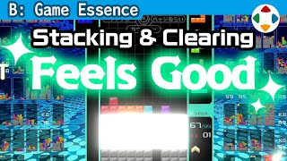
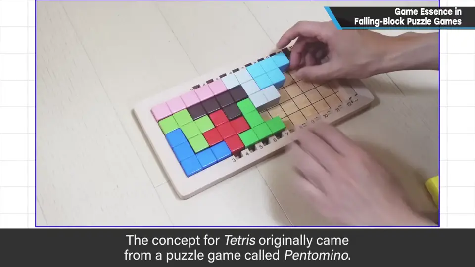
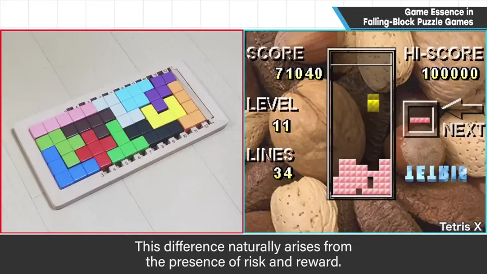
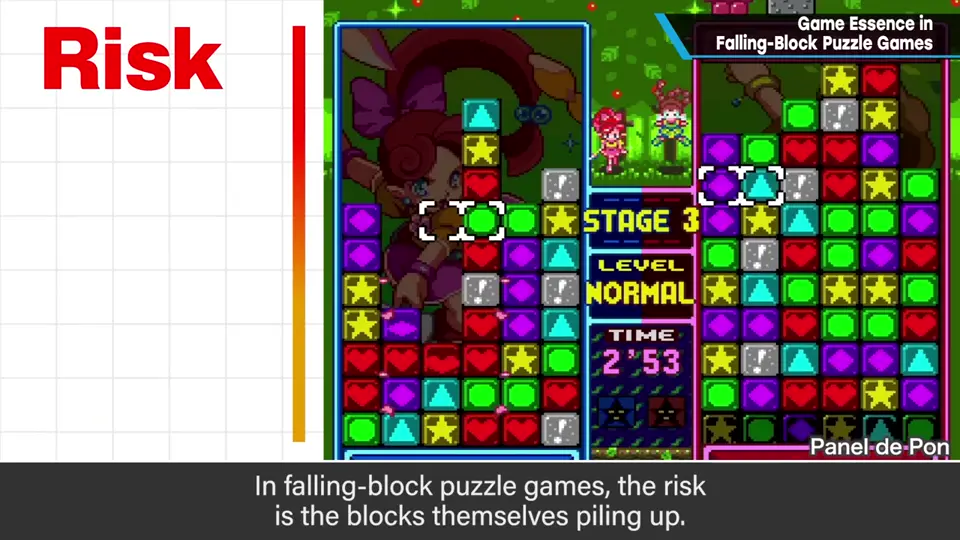
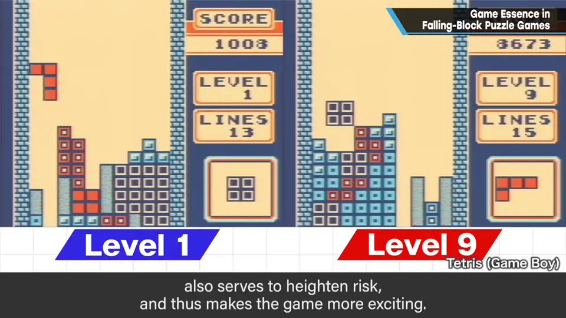
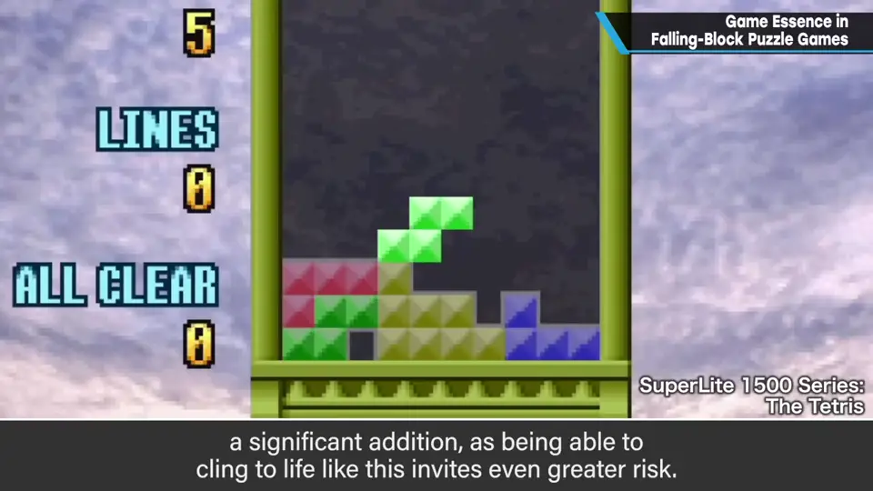
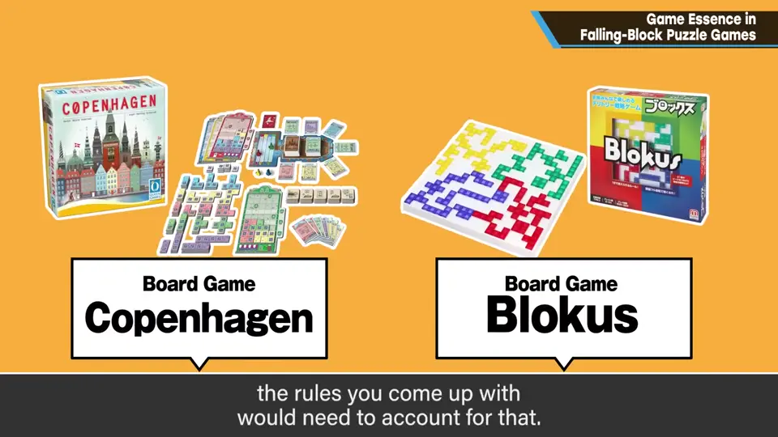
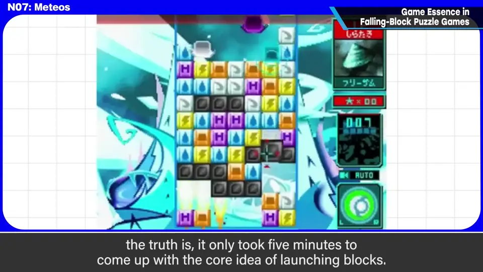

速览
解谜游戏有很多种。拼图这类没有博弈，乐趣更多来自拼出来的成就感。著名的《俄罗斯方块》是以「五格骨牌（Pentomino）」为原型发想的——把 12 种形状的拼块整齐放进矩形，但它和拼图一样没有游戏性；而《俄罗斯方块》有，区别就在于风险与回报。落块解谜的风险就是堆积本身：越堆越高，思考时间越短；整齐地凑满一行消掉，风险下降；一次消多行，因为事先承担了更高风险，所以更爽。下落速度逐渐加快也和风险上升的刺激有关；后来移植作中加入的「落地后还能旋转、滑动」，让人能在风险边缘坚持，也很重要。五格骨牌如果做成对战、加入一定规则，也能产生游戏性。落块解谜是能非常简单、直觉地理解游戏性的类型：不要从「方块会消失」开始企划，而要想清楚「消除为什么有趣」。樱井构思《Meteos》时，想到「把陨石发射上去」这个基础点子只花了 5 分钟——他不擅长落块解谜却能做到，是因为事先理解了这个类型的游戏性如何产生。
1. 拼图没有博弈 0:03
解谜游戏也有很多种。拼图这类没有博弈，乐趣更多来自一点点拼起来的成就感。
著名的《俄罗斯方块》以「五格骨牌（Pentomino）」为原型发想：把 12 种形状的拼块整齐地放进矩形。但五格骨牌和拼图一样没有游戏性，《俄罗斯方块》却有——区别在于有没有风险与回报。


2. 落块解谜的风险与回报 0:52
- 风险就是堆积本身：堆得越高，能思考的时间越短。
- 漂亮地凑齐一行消掉，风险下降；一次消多行，因事先承担了更高风险，所以更爽。
- 下落速度不断加快的规格，也与风险上升带来的刺激有关。
- 后来移植作中加入的：方块落地后还能旋转、滑动，让人在风险边缘坚持——从「吸引风险」的意义上很重要。




顺带一提，五格骨牌如果做成对战、设一定规则，也会产生游戏性；不过因为拼块的配置需要反复尝试，可能也需要把这种试错规则化。
3. 先想「为什么消除有趣」 1:55
落块解谜是能非常简单、直觉地理解游戏性的类型。不要从「方块会消失」开始企划，而要好好想想为什么消除会有趣。
樱井企划《Meteos》时，想到「把陨石发射上去」这个基础点子只花了 5 分钟。他不擅长落块解谜却能做到，是因为先理解了这个类型的游戏性是如何产生的。

自测题
1. 五格骨牌和《俄罗斯方块》的根本区别是什么？
五格骨牌像拼图一样没有游戏性；《俄罗斯方块》有风险与回报（堆积是风险，消行降低风险）。 0:49
2. 落块解谜中，为什么一次消多行更爽？
因为为了一次消多行，事先承担了更高的风险（堆得更高），风险越高、释放时越爽。 1:06
3. 樱井为什么能在 5 分钟内想出《Meteos》的核心点子？
尽管不擅长落块解谜，他事先理解了这个类型的游戏性是如何产生的（风险与回报的原理）。 2:02